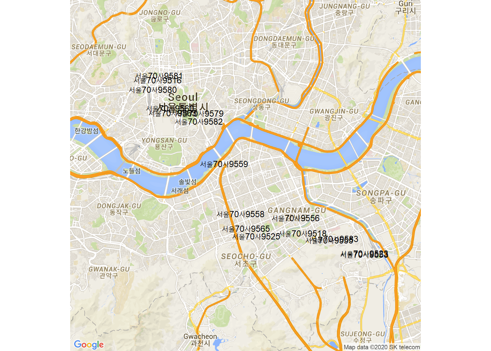

5 실시간 버싀 위치의 시각화
이제 다운받은 노선버스의 실시간 위치 정보를 이용하여 Google 지도에 시각화한다.
즉, 구글 맵에 버스 위치를 표시해 보기로 한다.
1. 패키지 불러오기
5.1 2. 실시간 위치를 Marker로 표시하기
5.1.1 2-1. Google API 인증
register_google(key="API Key") # https://console.cloud.google.com 에서 확인5.1.2 2-2. 버스 위치의 중심점 찾기
5.1.3 2-3. 구글 지도 정보 가져오기
get_googlemap() 함수를 이용하여 구글 지도 정보를 가져온다. 그 결과는 map에 대입한다.
## Source : https://maps.googleapis.com/maps/api/staticmap?center=37.515334,127.031252&zoom=11&size=640x640&scale=2&maptype=roadmap&markers=37.4838,127.087094%7C37.489024,127.03185%7C37.542216,127.002351%7C37.546402,126.985672%7C37.564852,126.977214%7C37.562671,126.976303%7C37.557903,126.973391%7C37.548632,126.984121%7C37.546192,127.002633%7C37.521076,127.018086%7C37.496296,127.028385%7C37.485094,127.038128%7C37.494262,127.062958%7C37.48653,127.067165%7C37.48321,127.084057%7C37.476547,127.105885%7C37.475975,127.105996&key=xxx5.3 3. 지도에 차량번호를 포함시키기
지도 위에 현재 운행 위치에서 운행중인 차량번호를 표시해 보자.
5.3.1 3-1. 데이터 세트
data 데이터 세트에 차량번호 정보가 plainNo 컬럼에 있다.
## plainNo lon lat
## 1 서울70사9583 127.0871 37.48380
## 2 서울70사9565 127.0319 37.48902
## 3 서울70사9582 127.0024 37.54222
## 4 서울70사9563 126.9857 37.54640
## 5 서울70사9581 126.9772 37.56485
## 6 서울70사9516 126.9763 37.562675.3.2 3-2. 차량의 중심점 확인
이미 앞에서 gc 데이터 세트를 생성하여 중심점 cen을 확인한 바 있다.
5.3.3 3-3. 구글 지도 정보 가져오기
이제는 마커 표기 없는 구글 지도 정보를 가져온다.
## Source : https://maps.googleapis.com/maps/api/staticmap?center=37.515334,127.031252&zoom=12&size=640x640&scale=2&maptype=roadmap&key=xxx5.3.4 3-4. 지도위에 버스 번호 표시하기
geom_text() 함수를 이용하여 data$plainNO 를 label 인수의 값으로 입력해 준다.
ggmap(map1, extent="device") +
geom_text(data = data, # 분석용 데이터 세트
aes(x = lon, y = lat), # 경도, 위도 컬럼
size = 3, # 글자 크기
label = data$plainNo) # 운행중인 버스번호 출력